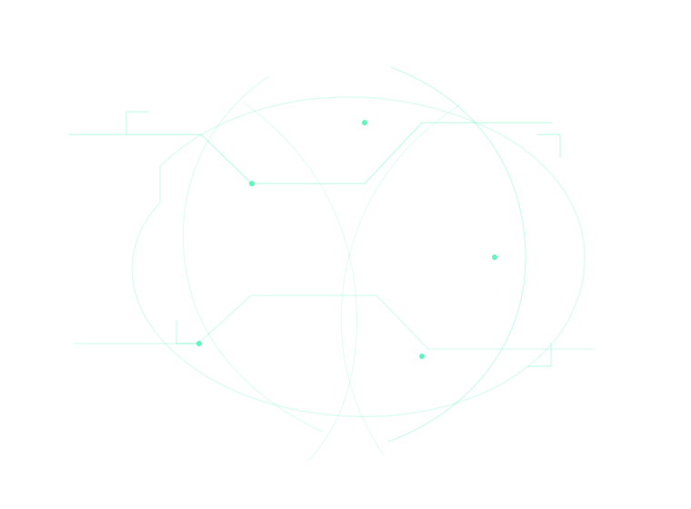
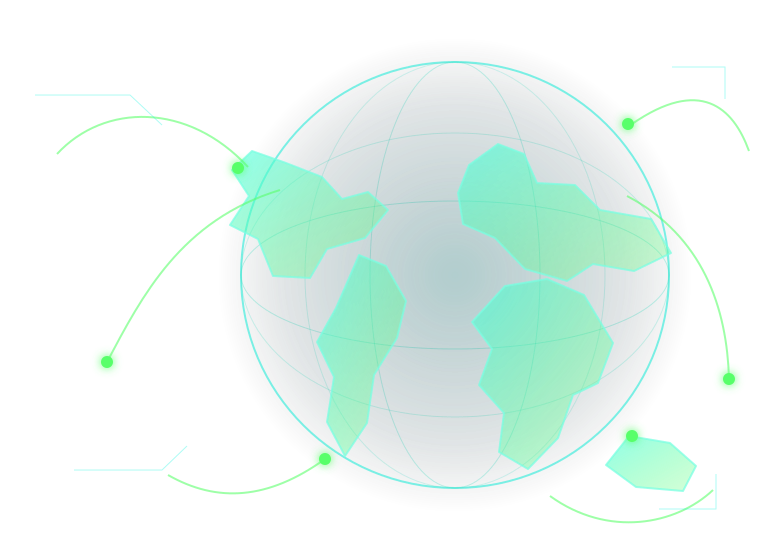
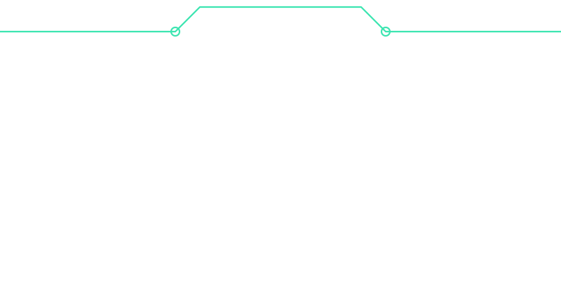
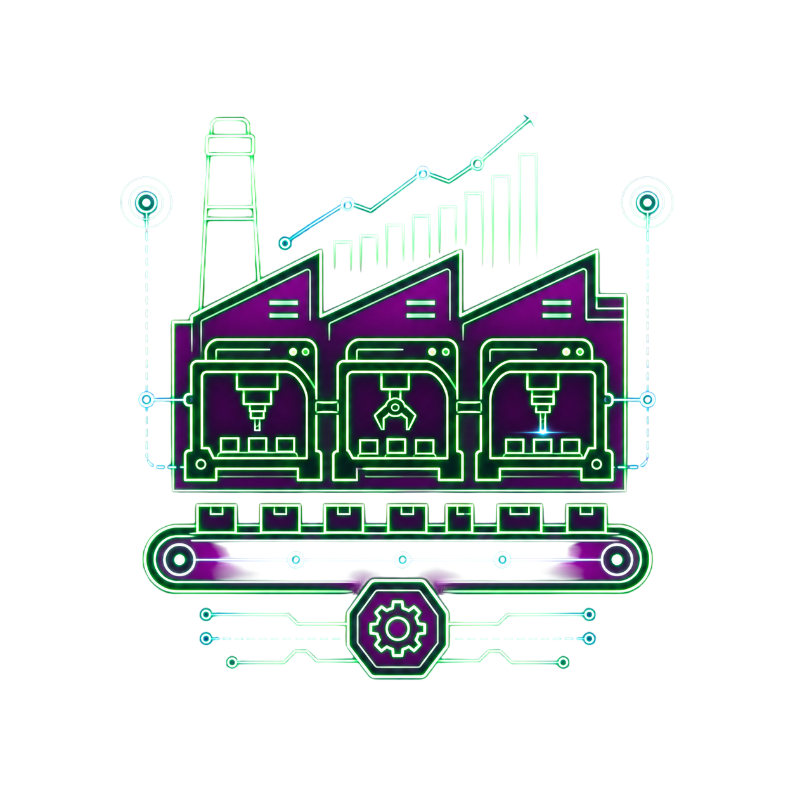
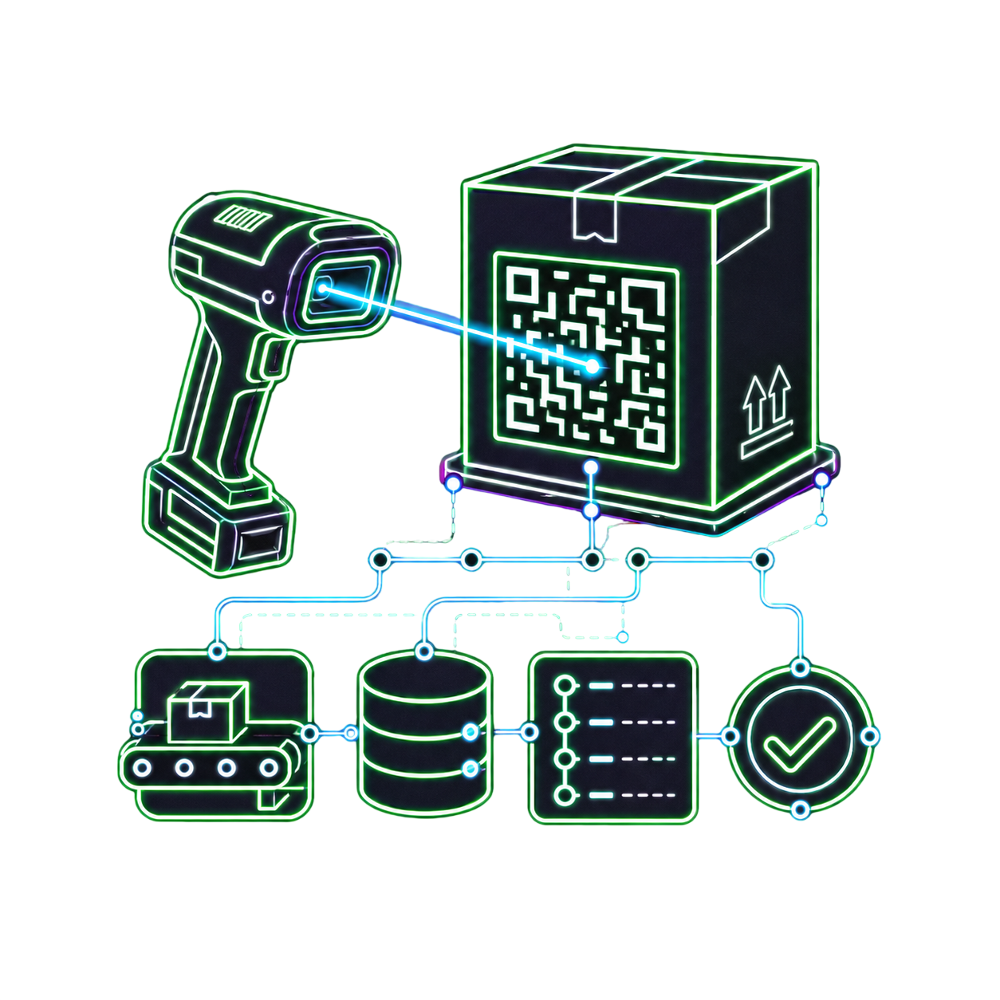
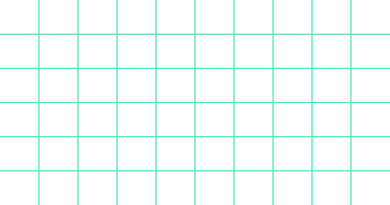
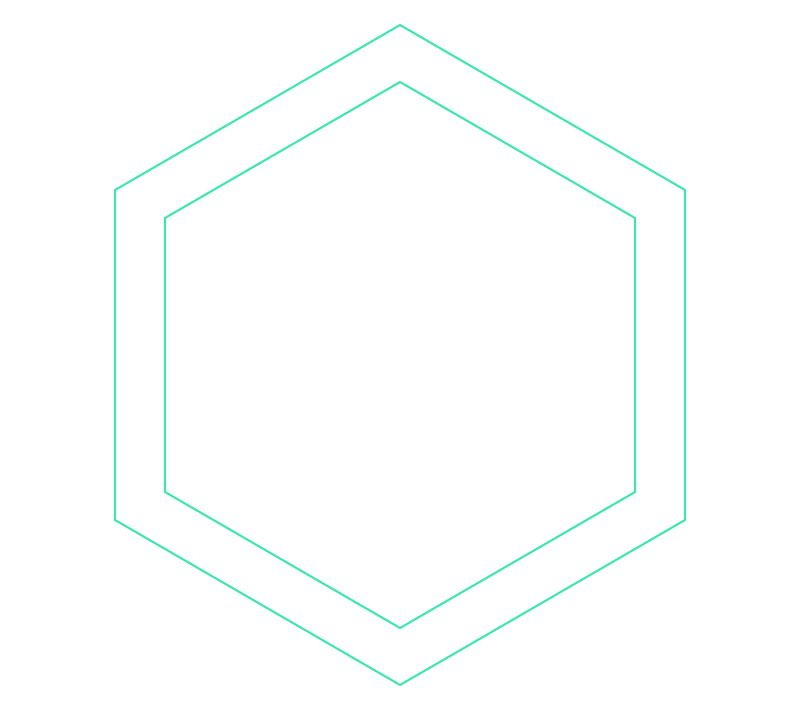
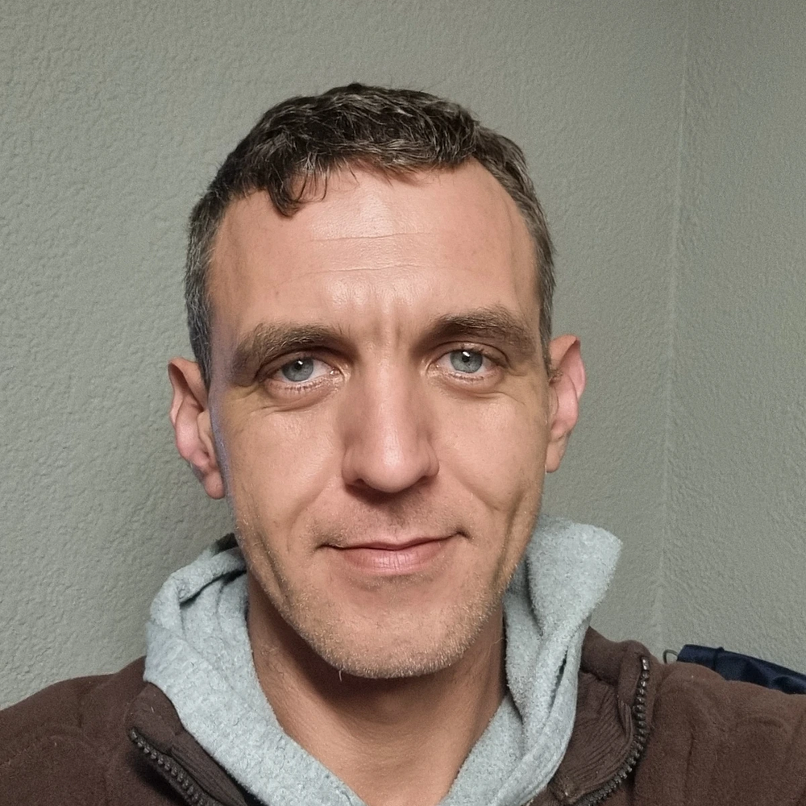
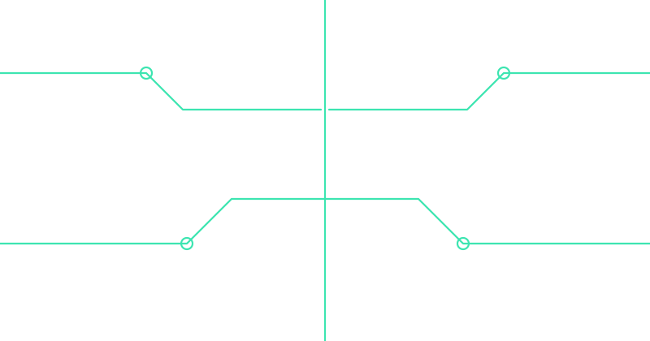

INDUSTRIAL SYSTEMS
Software that supports operational processes, equipment and people.
SOFTWARE ENGINEER • SYSTEMS ARCHITECT •
DEVOPS
I BUILD RELIABLE SYSTEMS FOR REAL-WORLD OPERATIONS. I design software platforms, data integrations, mobile workflows and automation tools that make complex operations easier to run, support and improve.



Software that supports operational processes, equipment and people.
Validated pipelines that turn raw events into useful information.
Maintainable services, APIs, databases and domain logic.
Reliable connections across devices, applications and teams.
Deployment, monitoring, backup and recovery workflows.
Practical assistance and automation grounded in trusted data.

A modular platform for operational visibility, reporting, traceability and support workflows in a manufacturing environment.
VIEW PROJECT
A staged integration architecture for moving industrial machine reports and events through local collection, validation, recovery-aware queueing, server-side ingestion and operational reporting.
VIEW PROJECT
A controlled workflow for production packets, mobile scanning, validation and record lookup.
VIEW PROJECT
An authenticated mobile interface for scanning, field tasks and access to operational information.
VIEW PROJECT
A configurable tool for modelling capacity, schedules and operational scenarios.
VIEW PROJECTA secure case-support environment for research, evidence organisation and controlled investigative workflows.
VIEW PROJECT
Operational sources feed data collection, validation and integration, services and automation, dashboards and apps, storage and recovery, and users and roles.


I begin with the operation, map the data and failure points, then build the smallest reliable system that teams can understand, operate and recover.
LEGEND SYSTEMS A4 BUILDER
Open the self-contained A4 builder to edit structured sections, replace and position the portrait, manage experience, skills and technologies, import or export JSON, switch visual systems, and print or save Page One as a PDF.
PC repair, hardware diagnostics and self-directed software learning.
Software, networking, infrastructure and security-focused technical projects.
Control-equipment assembly, programming and technical production support.
POS deployment, troubleshooting and client-site systems support.
Software platforms, infrastructure tooling and applied technology research.
Industrial software, systems integration, reporting and DevOps.

Need help with a complex software, integration or operational systems problem? I am open to engineering roles, consulting and technical collaboration.